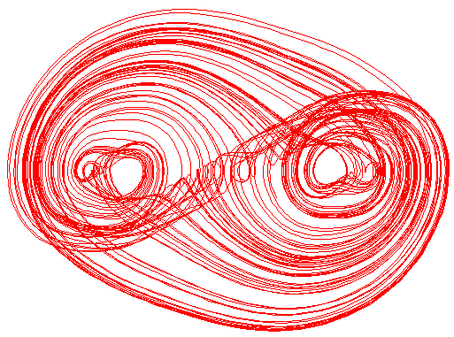
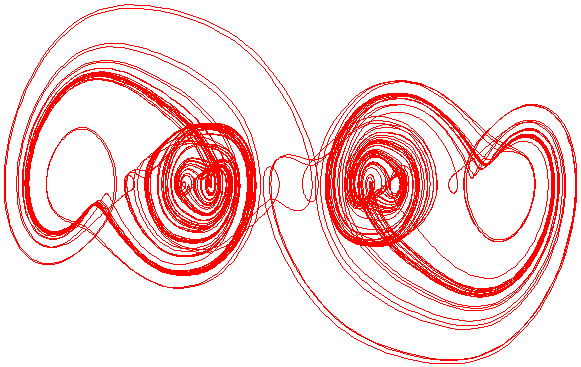

See also a Gallery of multispiral
Strange Attractors in the modified
Chua's system
See also a Gallery of multispiral
Strange Attractors in the modified
Chua's system
Ref ,
in the Int. Journ. of Bifurcation and Chaos 9(6), 1009-1039, (1999), (IJBC).
See also a Gallery of multispiral
Strange Attractors in the modified
Chua's system
See also some multispiral
Strange Attractors in some
nonautonomous system
See also some multispiral
Strange Attractors in some
PWL Reich-Kapitaniak type system
See also some multi-buckle
Strange Attractors in some
Van der pol type system
Brockett [1982] studied the following system :
{dx}/{dt} = y, {dy}/{dt} = z, {dz}/{dt} = -beta.y -gamma.z + g(x),
where x and y are functions of t, g(x) is some PWL function, and beta, gamma are the parameters of the system. In the ref. given above, I replaced g by the Chua's nonlinearity to get some new strange attractors:

A 4-spiral strange attractor exhibited by the modified Brocket's system

A 6-spiral strange attractor exhibited by the modified Brocket's system
Aziz Alaoui's home page